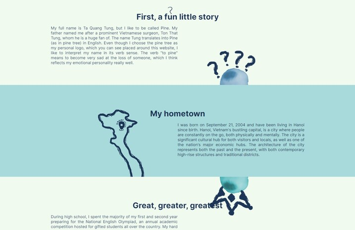
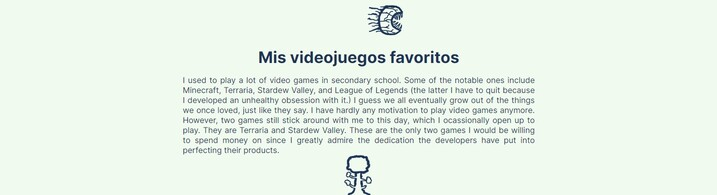

Animayshuns
Animation 1
This animation is present in the homepage. It consists of three images that slide in and out of the screen.
Animation 2
This animation is present in the about page. It consists of two images and spans two different sections. The images rise and dip alternately.

Animation 3
This animation is present in the profile page. It features a drawing that glides across the screen from left to right infinitely.
